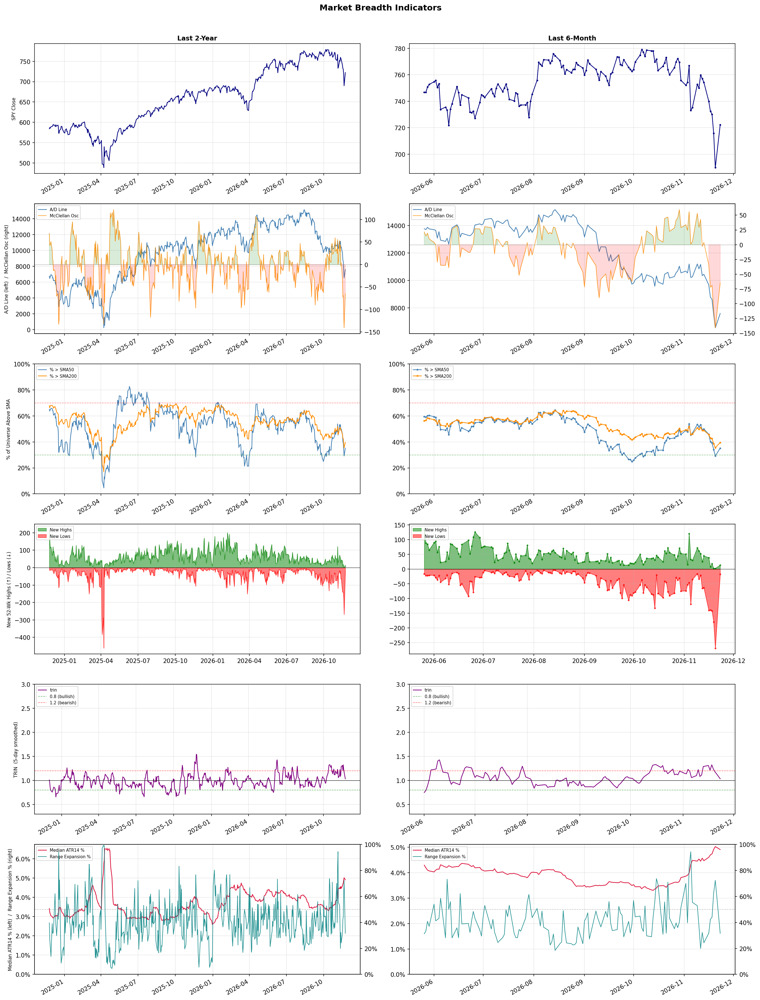

A daily market breadth and sector rotation report for active investors
| Item | Read |
|---|---|
| Regime | Defensive |
| Risk posture | Defensive |
| Universe | 1,310 stocks tracked · 14 new 52-week highs · 30 active swing setups |
| Breadth | only 35.2% of tracked stocks are above SMA50, new lows exceed new highs (17 vs 14), McClellan oscillator (breadth momentum) is negative at -64.8 |
| Leadership | Advertising Agencies, Discount Stores, and Apparel Manufacturing |
| Weakest groups | Other Industrial Metals & Mining, Uranium, and Electrical Equipment & Parts |
Use this report to prioritize research and chart review; validate entries, stops, liquidity, earnings, and risk before acting.
| Item | Read |
|---|---|
| Primary read | Defensive regime with Defensive risk posture. |
| Research queue | STGW, APP, EVC, MGNI, TTD |
| Leadership focus | Advertising Agencies, Discount Stores, and Apparel Manufacturing |
| Caution list | Other Industrial Metals & Mining, Uranium, and Electrical Equipment & Parts |
| Review prompt | Check extension risk, chart location, fundamentals, valuation, and earnings before using any research row. |
| Item | Read |
|---|---|
| Primary read | 4 active risk warnings; use screen output as watchlist input only. |
| Bullish screens | ELVN, BLMN, ARHS, YUM, ORI |
| Bearish screens | IQ, CRK, EXE, MNST, DAR |
| Alerts / levels | Automated trigger, stop, ATR, liquidity, reward/risk, and event-risk levels are pending future enrichment. |
| Review prompt | Open the linked chart, define trigger and invalidation, then check liquidity and event risk independently. |
Risk Posture: Defensive — screen backdrop favors caution; require independent risk review before new exposure
Metric context: McClellan below -50 = elevated selling pressure; below -100 = washout territory. Range Expansion = share of stocks with daily range above their 20-day average. Signal Density = share of tracked names appearing in signal screens.
| Breadth Date | % > SMA50 | % > SMA200 | New Highs | New Lows | McClellan | Median Range | Avg Range | Median ATR14 | Range Expansion | Signal Density |
|---|---|---|---|---|---|---|---|---|---|---|
| 2026-11-23 | 35.2% | 39.6% | 14 | 17 | -64.8 | 3.5% | 4.4% | 4.9% | 31.6% | 2.3% |

Prior comparison date: November 20, 2026
| Metric | Prior | Current | Change |
|---|---|---|---|
| Regime | Defensive | Defensive | unchanged |
| Risk Posture | Defensive | Defensive | unchanged |
| % > SMA50 | 29.2% | 35.2% | +6.1 pts |
| % > SMA200 | 35.5% | 39.6% | +4.1 pts |
| New Highs | 2 | 14 | +12 |
| New Lows | 269 | 17 | +252 |
Top-10 industries entering: Airlines. Top-10 industries leaving: Specialty Retail. New multi-signal long setups: ELVN. New multi-signal short setups: CRK, EXE.
| Status | Tickers | Read |
|---|---|---|
| Added | AEE, ARHS, BLMN, CRK, CXM, DAR, DOC, DXC | New technical screen matches vs prior report. |
| Removed | ALB, ALHC, ALLO, ATEC, BANC, BROS, BTDR, CIG | No longer present in today's technical screen matches. |
| Still Active | IQ, RRC | Appeared in both current and prior reports. |
| Promoted | none | Model Screen Score improved by at least 15 points. |
| Downgraded | none | Model Screen Score declined by at least 15 points. |
| Direction | Industry | ETF | Prior Rank | Current Rank | Days | Rank Change |
|---|---|---|---|---|---|---|
| Rose | Airlines | N/A | 78 | 6 | 35 | +72 |
| Rose | Resorts & Casinos | N/A | 85 | 22 | 42 | +63 |
| Rose | Advertising Agencies | N/A | 56 | 1 | 42 | +55 |
| Rose | REIT - Retail | N/A | 69 | 16 | 42 | +53 |
| Rose | Integrated Freight & Logistics | N/A | 74 | 23 | 42 | +51 |
Bull: The airline industry is experiencing a bullish trend primarily due to strong demand recovery post-pandemic, as evidenced by the soaring stock of American Airlines despite recent fluctuations. Factors such as increased consumer travel demand, as highlighted by the positive sentiment in articles discussing American Airlines' stock surge and the overall optimism for airline stocks in 2026, indicate a robust market outlook. Additionally, the resilience of United Airlines' stock, even amid disappointing earnings, suggests that investors remain confident in the sector's long-term growth potential, further driving relative strength against other industries.
Bear: While the airline industry may currently exhibit a rising relative-strength trend, this could be misleading given the cyclical nature of the sector and potential headwinds looming on the horizon. Factors such as rising fuel costs, labor shortages, and economic uncertainty could dampen consumer travel demand, leading to volatility in stock prices despite recent surges. Moreover, the optimism surrounding companies like United Airlines may be overly optimistic, as disappointing earnings can indicate underlying operational challenges that could hinder long-term growth potential.
Verdict: The airline industry's bullish trend is primarily driven by a strong recovery in consumer travel demand post-pandemic, as evidenced by rising stock prices like that of American Airlines, which reflects growing investor confidence in long-term growth. However, key risks such as rising fuel costs, labor shortages, and broader economic uncertainties could dampen this momentum, making it crucial for investors to monitor these factors closely to assess the sustainability of the industry's growth trajectory.
Sources: Google News
Bull: The Resorts & Casinos sector is experiencing rising relative strength due to a robust recovery in consumer discretionary spending, as highlighted by positive Q2 earnings reports from major casino operators like Bally's and Red Rock Resorts. Additionally, the focus on strategic dealmaking amid slower sector growth, as noted in recent headlines, suggests that companies are positioning themselves for long-term profitability, which bodes well for investor confidence and stock performance in the industry. This combination of strong earnings and proactive corporate strategies indicates a favorable outlook for the sector moving forward.
Bear: While the Resorts & Casinos sector may show rising relative strength, the positive Q2 earnings reports could be misleading as they may reflect short-term consumer spending spikes rather than sustainable growth. Additionally, the emphasis on dealmaking amid slower sector growth raises concerns about potential overextension and the ability of these companies to maintain profitability in a competitive landscape, especially as economic uncertainties loom and discretionary spending may falter. This suggests that the current optimism could be overly optimistic, masking underlying vulnerabilities in the industry.
Verdict: The Resorts & Casinos sector's rising relative strength is primarily driven by a rebound in consumer discretionary spending, evidenced by strong Q2 earnings from major operators, which reflects a renewed confidence in leisure activities. However, investors should remain cautious of the bear case, as the reliance on short-term spending spikes and the potential risks of overextension through strategic dealmaking could undermine long-term profitability amid economic uncertainties. It is advisable for investors to closely monitor consumer trends and the broader economic landscape to assess the sustainability of this growth.
Sources: Google News
Bull: The Advertising Agencies sector is experiencing rising relative strength primarily due to the increasing integration of AI technologies in marketing strategies, which enhances efficiency and targeting capabilities, as highlighted in the Morningstar article on the best AI stocks. Additionally, the positive sentiment around key players like Omnicom Group, as noted in TradingView, indicates robust performance and growth potential within the industry, further bolstered by a favorable Q3 review that showcases resilience and adaptability against economic headwinds. This combination of technological advancement and strong company fundamentals positions the sector favorably for continued growth.
Bear: While the integration of AI technologies may enhance efficiency, it also raises significant concerns about job displacement and the potential for over-reliance on algorithms, which could lead to a loss of creativity and human insight in advertising strategies. Furthermore, the advertising industry's performance is heavily tied to economic cycles; any downturn could quickly reverse the current positive sentiment, as companies may cut marketing budgets in response to reduced consumer spending. Thus, the apparent strength in the sector could be misleading, masking underlying vulnerabilities that could surface in a less favorable economic environment.
Verdict: The advertising agencies sector is experiencing rising strength primarily due to the integration of AI technologies, which enhances efficiency and targeting, alongside strong performance from key players like Omnicom Group. However, a key risk to this growth is the potential for economic downturns that could lead to reduced marketing budgets and job displacement concerns, which may undermine the industry's resilience and creativity. Investors should monitor economic indicators closely while considering exposure to this sector.
Sources: Google News
Bull: The rising relative strength of the Retail REIT sector can be attributed to a combination of improving consumer spending trends and the increasing recognition of high-yielding retail REITs as attractive investment opportunities, as highlighted by articles like "20 Best-Yielding Retail REITs" and "The Best REITs to Buy" from Morningstar. Additionally, the ongoing shift towards e-commerce and omnichannel retailing is driving demand for well-located retail properties, further bolstering investor confidence in the sector's resilience and growth potential as noted in "How to Invest in Real Estate Investment Trusts (REITs) in 2026."
Bear: While the rising relative strength of Retail REITs may seem promising, it overlooks significant headwinds such as the ongoing challenges posed by e-commerce competition, which continues to erode traditional brick-and-mortar sales. Additionally, rising interest rates and inflation could pressure consumer spending and increase borrowing costs for REITs, potentially leading to reduced profitability and lower dividends. The optimism surrounding high-yielding retail REITs may be misplaced if these fundamental issues persist, raising concerns about their long-term sustainability.
Verdict: The Retail REIT sector's rising relative strength is primarily driven by improving consumer spending and the appeal of high-yielding investment opportunities, alongside the demand for well-located retail properties that support e-commerce and omnichannel strategies. However, investors should remain cautious of the significant risks posed by e-commerce competition, rising interest rates, and inflation, which could undermine profitability and dividend sustainability in the long term. It is essential to closely monitor these economic indicators and market dynamics to make informed investment decisions.
Sources: Google News
Bull: The Integrated Freight & Logistics industry is experiencing a rising relative strength due to increasing demand for efficient supply chain solutions as highlighted by articles discussing the best transportation and supply chain stocks for 2026. This growing emphasis on logistics efficiency is likely driven by ongoing recovery in global trade and e-commerce, which are pushing companies to optimize their transportation networks. Despite short-term volatility, as seen with J.B. Hunt's recent drop, the long-term outlook remains positive, supported by robust investment in logistics infrastructure and technology advancements that enhance operational efficiencies.
Bear: While the bull thesis highlights increasing demand for efficient supply chain solutions, it overlooks significant headwinds such as rising fuel costs, labor shortages, and potential regulatory challenges that could erode profit margins across the Integrated Freight & Logistics sector. Additionally, the recent drop in J.B. Hunt's stock price amid sector-wide selling suggests underlying vulnerabilities that could indicate a broader market correction, raising concerns about the sustainability of the current growth narrative. Furthermore, the anticipated recovery in global trade and e-commerce may not materialize as expected, particularly if economic conditions deteriorate or geopolitical tensions escalate, which could further dampen demand for logistics services.
Verdict: The Integrated Freight & Logistics industry is likely experiencing rising relative strength due to robust demand for efficient supply chain solutions, fueled by ongoing recovery in global trade and e-commerce. However, key risks such as rising fuel costs, labor shortages, and potential regulatory challenges could significantly impact profit margins and undermine the sustainability of this growth. Investors should closely monitor these factors while considering opportunities in logistics infrastructure and technology advancements.
Sources: Google News
| Direction | Industry | ETF | Prior Rank | Current Rank | Days | Rank Change |
|---|---|---|---|---|---|---|
| Fell | Copper | COPX | 3 | 84 | 42 | -81 |
| Fell | Steel | SLX | 7 | 71 | 42 | -64 |
| Fell | Oil & Gas E&P | XOP | 1 | 65 | 28 | -64 |
| Fell | Oil & Gas Refining & Marketing | CRAK | 1 | 64 | 42 | -63 |
| Fell | Oil & Gas Integrated | XLE | 2 | 62 | 35 | -60 |
Bear: While the bull analyst points to temporary tariff uncertainty as the primary driver of recent declines in copper stocks, this overlooks the broader fundamental issues facing the copper industry, such as declining ore grades, increasing production costs, and potential supply chain disruptions exacerbated by geopolitical tensions. Additionally, the optimism surrounding copper's role in emerging technologies may not materialize as quickly as anticipated, leading to a potential oversupply situation if production ramps up without corresponding demand growth. Therefore, the bearish trend in relative strength could signal deeper structural challenges rather than just short-term volatility.
Bull: The recent decline in copper's relative strength is likely driven by uncertainty surrounding tariffs, as highlighted by the Yahoo Finance article discussing the sharp drops in major copper stocks like Freeport-McMoRan and Teck Resources. This uncertainty can dampen investor sentiment and lead to volatility in the sector, overshadowing the positive long-term outlook suggested by articles from The Motley Fool and Seeking Alpha that emphasize copper's role in the AI boom and other emerging technologies. Additionally, the overall market sentiment reflected in the headlines indicates that while there are bullish prospects for copper, short-term pressures from geopolitical and economic factors are currently weighing on the industry.
Verdict: The recent decline in the copper industry is primarily driven by a combination of short-term uncertainties related to tariffs and broader fundamental challenges, including declining ore grades and rising production costs. The key risk from the bear case is the potential for an oversupply situation if production increases without a corresponding rise in demand, particularly as optimism around copper's role in emerging technologies may take longer to materialize than expected. Investors should closely monitor geopolitical developments and production trends to gauge the sustainability of current price levels.
Sources: Google News
Bear: While the transition to sustainable practices in the steel industry may present long-term growth opportunities, the immediate challenges of rising production costs and supply chain disruptions are likely to overshadow these benefits, particularly for traditional steel producers. Furthermore, the shift towards "green iron" could require significant capital investment and technological adaptation, which may strain the financial health of companies that are already grappling with declining demand and competitive pressures. This combination of factors suggests that the steel industry may continue to face significant headwinds, making it a risky investment in the near term.
Bull: The steel industry is currently facing relative weakness due to macroeconomic challenges, including rising production costs and supply chain disruptions, as highlighted in the Yahoo Finance article discussing the challenges faced by steel producers. Additionally, the focus on sustainable practices, such as the "green iron trade" mentioned in EurekAlert!, indicates a shift in industry dynamics, which may temporarily pressure traditional steel stocks as they adapt to new environmental standards and technologies. However, these transformations also present long-term growth opportunities as the industry evolves towards more sustainable practices.
Verdict: The steel industry's current decline is primarily driven by rising production costs and persistent supply chain disruptions, which are exacerbating the challenges faced by traditional producers. While the transition toward sustainable practices, such as the adoption of "green iron," offers long-term growth potential, the immediate financial strain from necessary capital investments and declining demand poses a significant risk. Investors should approach the steel sector cautiously, focusing on companies that are effectively managing these transitional challenges while maintaining financial stability.
Sources: Google News
Bear: While the bull analyst highlights opportunities for growth in specific companies, the broader Oil & Gas E&P sector is facing significant headwinds that could overshadow these individual success stories. Rising production levels and potential oversupply, coupled with macroeconomic uncertainties and geopolitical tensions, create a precarious environment for sustained profitability. Furthermore, the falling relative-strength trend indicates a lack of investor confidence, suggesting that even positive outlooks for certain stocks may not be enough to counteract the overall bearish sentiment in the sector.
Bull: The Oil & Gas E&P sector is experiencing a decline in relative strength primarily due to macroeconomic concerns surrounding oil prices and geopolitical instability, as highlighted by the "Crude Awakening" article discussing the impact of global conflicts on energy markets. Additionally, while the international E&P outlook appears bright, as noted in the Yahoo Finance article, the overall sentiment may be tempered by rising production levels and potential oversupply concerns, which can negatively affect stock performance in the short term. Despite this, the positive outlook for specific companies like Northern Oil and Gas suggests that there are still opportunities for growth within the sector.
Verdict: The Oil & Gas E&P sector's decline is primarily driven by macroeconomic uncertainties, geopolitical tensions, and rising production levels that raise concerns about oversupply, which collectively undermine investor confidence. The key risk from the bear case is that even if certain companies show growth potential, the broader market sentiment may continue to weigh down stock performance, making it crucial for investors to carefully assess individual company fundamentals against the prevailing sector challenges. Therefore, a cautious approach is recommended, focusing on companies with solid financials and strategic positioning in the current environment.
Sources: Google News
Bear: While the bull analyst points to long-term growth prospects in the broader energy sector, it's crucial to recognize that the oil and gas refining industry is facing significant headwinds, including regulatory pressures and a global push towards decarbonization. The unprecedented run in refiner stocks, as highlighted by CNBC, may indicate an overvaluation that could lead to a sharp correction, especially if refining margins continue to tighten amid fluctuating oil prices and increased competition from renewable energy sources. Furthermore, the International Energy Agency's report on potential volatility in oil markets underscores the fragility of the current refining landscape, suggesting that investors should be wary of the sustainability of recent gains.
Bull: The Oil & Gas Refining & Marketing sector is experiencing a decline in relative strength primarily due to heightened investor focus on long-term growth prospects in the broader energy sector, as indicated by multiple headlines highlighting the best oil stocks to buy in 2026. This shift in attention may be driven by expectations for a transition towards cleaner energy sources, coupled with concerns over the sustainability of current refining margins, as suggested by CNBC's mention of an unprecedented run in refiner stocks that may soon end. Additionally, the International Energy Agency's report suggests potential volatility in oil markets, further contributing to investor caution in the refining space.
Verdict: The Oil & Gas Refining & Marketing sector is experiencing a decline due to shifting investor focus towards long-term growth in cleaner energy sources, coupled with concerns over the sustainability of refining margins amidst regulatory pressures and heightened competition from renewables. The key risk highlighted by the bear thesis is the potential for an overvaluation of refiner stocks, which could lead to a sharp correction if refining margins continue to tighten and oil market volatility persists. Investors should closely monitor refining margins and regulatory developments to assess the viability of their positions in this sector.
Sources: Google News
Bear: While the bull analyst acknowledges broader market concerns, it's crucial to emphasize that the recent headlines promoting oil and gas stocks may be overly optimistic in the face of persistent headwinds. The transition to renewable energy is not just a trend but a structural shift, and regulatory pressures aimed at reducing carbon emissions could further dampen demand for fossil fuels. Additionally, geopolitical uncertainties, such as potential conflicts and supply chain disruptions, may lead to volatility in oil prices, undermining the stability that investors seek in the sector.
Bull: The Oil & Gas Integrated sector is currently experiencing a decline in relative strength primarily due to broader market concerns over energy demand and potential economic slowdowns, which have overshadowed the positive sentiment reflected in recent headlines. While reports highlight increasing fair value estimates and potential tailwinds for major oil stocks, the overall trend suggests that investors may be cautious about the sustainability of higher oil prices amid geopolitical uncertainties and shifts towards renewable energy, leading to a temporary dip in the sector's performance compared to other industries.
Verdict: The Oil & Gas Integrated sector's decline can be attributed to heightened investor caution stemming from concerns over energy demand amid potential economic slowdowns and the ongoing transition to renewable energy sources. Key risks from the bear case include regulatory pressures aimed at reducing carbon emissions and geopolitical uncertainties that could lead to price volatility, undermining investor confidence in the sector's stability. Investors should closely monitor these factors while considering their exposure to oil and gas stocks in the current market environment.
Sources: Google News
| Industry | Rank | ETF | 7d | 14d | 28d | 42d | Chg 42d | Size | 20D | 60D | Composite | Active Setups |
|---|---|---|---|---|---|---|---|---|---|---|---|---|
| Advertising Agencies | 1 | N/A | 1 | 2 | 43 | 56 | +55 | 7 | 22.6% | 10.1% | 0.962 | 0 |
| Discount Stores | 2 | XRT | 3 | 6 | 15 | 11 | +9 | 7 | 6.8% | 14.0% | 0.924 | 0 |
| Apparel Manufacturing | 3 | N/A | 2 | 1 | 11 | 19 | +16 | 6 | 6.4% | 18.4% | 0.879 | 0 |
| Insurance Brokers | 4 | N/A | 5 | 12 | 7 | 48 | +44 | 6 | 3.9% | 1.7% | 0.871 | 0 |
| Restaurants | 5 | N/A | 20 | 9 | 25 | 38 | +33 | 16 | 10.4% | 5.6% | 0.860 | 1 |
| Airlines | 6 | N/A | 14 | 14 | 75 | 63 | +57 | 8 | 20.7% | 3.0% | 0.831 | 0 |
| REIT - Hotel & Motel | 7 | XLRE | 8 | 8 | 5 | 12 | +5 | 9 | 1.3% | 9.9% | 0.823 | 0 |
| Beverages - Non-Alcoholic | 8 | XLP | 12 | 13 | 20 | 30 | +22 | 7 | 3.9% | 1.1% | 0.818 | 0 |
| Insurance - Property & Casualty | 9 | KIE | 9 | 25 | 14 | 28 | +19 | 8 | 2.6% | 3.2% | 0.813 | 1 |
| Medical Care Facilities | 10 | IHF | 7 | 7 | 4 | 16 | +6 | 9 | 0.5% | 12.7% | 0.808 | 0 |
Rank columns (7d–42d) show the industry's rank that many trading days ago — lower is stronger. Chg 42d = rank change vs 42 trading days ago — positive means the industry moved up. 20D and 60D are the mean stock return within the industry over that period. Active Setups: count of today's swing-trade candidates from this industry appearing across all signal screens.
| Industry | Rank | ETF | 7d | 14d | 28d | 42d | Chg 42d | Size | 20D | 60D | Composite | Active Setups |
|---|---|---|---|---|---|---|---|---|---|---|---|---|
| Other Industrial Metals & Mining | 87 | N/A | 87 | 87 | 86 | 80 | -7 | 21 | -25.7% | -50.0% | 0.016 | 0 |
| Uranium | 86 | URA | 86 | 86 | 87 | 83 | -3 | 6 | -25.7% | -50.7% | 0.024 | 0 |
| Electrical Equipment & Parts | 85 | XLI | 85 | 83 | 85 | 73 | -12 | 12 | -22.0% | -41.1% | 0.059 | 0 |
| Copper | 84 | COPX | 83 | 76 | 64 | 3 | -81 | 6 | -23.6% | -38.6% | 0.061 | 0 |
| Computer Hardware | 83 | XLK | 84 | 85 | 63 | 27 | -56 | 15 | -25.8% | -33.9% | 0.087 | 0 |
| Chemicals | 82 | N/A | 70 | 71 | 68 | 84 | +2 | 8 | -19.8% | -28.8% | 0.092 | 0 |
| Gambling | 81 | N/A | 69 | 74 | 74 | 87 | +6 | 5 | -16.4% | -35.1% | 0.099 | 0 |
| Solar | 80 | TAN | 58 | 47 | 80 | 79 | -1 | 8 | -15.5% | -29.3% | 0.109 | 0 |
| Aerospace & Defense | 79 | ITA | 72 | 64 | 81 | 82 | +3 | 26 | -15.2% | -32.8% | 0.127 | 0 |
| Gold | 78 | GDX | 81 | 42 | 62 | 34 | -44 | 25 | -13.2% | -31.8% | 0.130 | 0 |
Rank columns (7d–42d) show the industry's rank that many trading days ago — lower is stronger. Chg 42d = rank change vs 42 trading days ago — positive means the industry moved up. 20D and 60D are the mean stock return within the industry over that period. Active Setups: count of today's swing-trade candidates from this industry appearing across all signal screens.
These are research candidates from top-ranked stocks, capped at five names per industry to avoid over-concentration. Returns shown (60D, 120D, 250D) are historical — they reflect where prices have already moved, not forward expectations. Extension Risk flags names that may require extra patience or a better entry point. They are not buy signals.
Chart: TV = TradingView chart (opens in browser); PDF = local chart file (if downloaded).
| Ticker | Name | Industry | Industry Rank | Market Cap | 60D Hist | 120D Hist | 250D Hist | Extension Risk | Research Reason | Chart |
|---|---|---|---|---|---|---|---|---|---|---|
| STGW | Stagwell | Advertising Agencies | 1 | N/A | 22.8% | 62.8% | 95.4% | Constructive | Top-ranked in industry | TV |
| APP | Applovin | Advertising Agencies | 1 | N/A | 17.7% | -34.5% | -33.2% | Constructive | Top-ranked in industry | TV |
| EVC | Entravision Communications | Advertising Agencies | 1 | N/A | 14.3% | 7.9% | 256.3% | Constructive | Top-ranked in industry | TV |
| MGNI | Magnite | Advertising Agencies | 1 | N/A | 10.8% | 81.8% | 78.2% | Constructive | Top-ranked in industry | TV |
| TTD | The Trade Desk | Advertising Agencies | 1 | N/A | 3.6% | -31.6% | -64.0% | Constructive | Top-ranked in industry | TV |
| WMT | Walmart | Discount Stores | 2 | N/A | 25.7% | 11.1% | 25.6% | Constructive | Top-ranked in industry | TV |
| OLLI | Ollie's Bargain Outlet | Discount Stores | 2 | N/A | 22.4% | 11.2% | -26.6% | Constructive | Top-ranked in industry | TV |
| COST | Costco | Discount Stores | 2 | N/A | 16.3% | 14.5% | 24.6% | Constructive | Top-ranked in industry | TV |
| DLTR | Dollar Tree | Discount Stores | 2 | N/A | 8.5% | 23.6% | 38.8% | Constructive | Top-ranked in industry | TV |
| TGT | Target | Discount Stores | 2 | N/A | 3.8% | 36.8% | 105.9% | Constructive | Top-ranked in industry | TV |
| VFC | VF Corp | Apparel Manufacturing | 3 | N/A | 47.6% | 23.6% | 25.1% | Constructive | Top-ranked in industry | TV |
| FIGS | FIGS Inc | Apparel Manufacturing | 3 | N/A | 35.0% | 73.9% | 116.9% | Constructive | Top-ranked in industry | TV |
| PVH | PVH Corp | Apparel Manufacturing | 3 | N/A | 26.0% | -2.6% | 22.8% | Constructive | Top-ranked in industry | TV |
| LEVI | Levi Strauss & Co. | Apparel Manufacturing | 3 | N/A | 12.6% | 6.7% | 17.8% | Constructive | Top-ranked in industry | TV |
| ZGN | Ermenegildo Zegna NV | Apparel Manufacturing | 3 | N/A | 1.3% | -4.6% | 36.2% | Constructive | Top-ranked in industry | TV |
| MRSH | Marsh | Insurance Brokers | 4 | N/A | 8.1% | 33.2% | 17.8% | Constructive | Top-ranked in industry | TV |
| BWIN | Baldwin Insurance Group | Insurance Brokers | 4 | N/A | 4.8% | 71.2% | 17.2% | Constructive | Top-ranked in industry | TV |
| AJG | Arthur J. Gallagher | Insurance Brokers | 4 | N/A | 3.1% | 36.7% | 12.1% | Constructive | Top-ranked in industry | TV |
| BRO | Brown & Brown | Insurance Brokers | 4 | N/A | -0.5% | 32.5% | -7.3% | Lagging | Top-ranked in industry; lagging | TV |
| AON | Aon PLC | Insurance Brokers | 4 | N/A | -6.4% | 5.7% | -3.0% | Lagging | Top-ranked in industry; lagging | TV |
These are technical screen matches from existing signal files. They are not trade recommendations. Trigger, stop, ATR, liquidity, reward/risk, and event risk still require separate validation until those inputs are available.
Model Screen Score is weighted by signal count, industry rank, freshness, and setup type. It is not a probability of profit, expected return, or suitability rating. Industry cap: max 3 candidates per industry.
Signal glossary: Momentum Pullback = stock in an uptrend that has pulled back 10–30% and shows re-entry conditions. MA Compression = short- and long-term moving averages converging, often preceding a directional move. Three-Day Up/Down = three consecutive closes in the same direction. New 52Wk High/Low = price reached a new annual extreme.
Chart: TV = TradingView chart (opens in browser); PDF = local chart file (if downloaded).
| Ticker | Industry | Setups | Close | Industry Rank | Signal Count | Model Screen Score | Reason | Chart |
|---|---|---|---|---|---|---|---|---|
| ELVN | Biotechnology | Momentum Pullback; Three-Day Up | 48.33 | 48 | 2 | 65 | Multi-signal; pullback setup | TV |
| RRC | Oil & Gas E&P | Momentum Pullback | 47.67 | 65 | 2 | 40 | Multi-signal; pullback setup | TV |
| BLMN | Restaurants | Momentum Pullback | 10.35 | 5 | 1 | 58 | Single-signal; top industry pullback | TV |
| ARHS | Specialty Retail | Momentum Pullback | 13.15 | 12 | 1 | 50 | Single-signal; pullback setup | TV |
| YUM | Restaurants | Three-Day Up | 164.44 | 5 | 1 | 48 | Single-signal; top industry setup | TV |
| ORI | Insurance - Property & Casualty | MA Compression | 40.06 | 9 | 1 | 45 | Single-signal; top industry setup | TV |
| ES | Utilities - Regulated Electric | MA Compression | 71.45 | 13 | 1 | 45 | Single-signal; compression setup | TV |
| TXNM | Utilities - Regulated Electric | MA Compression | 58.95 | 13 | 1 | 45 | Single-signal; compression setup | TV |
| HCA | Medical Care Facilities | Three-Day Up | 479.96 | 10 | 1 | 40 | Single-signal; top industry setup | TV |
| AEE | Utilities - Regulated Electric | Three-Day Up | 112.81 | 13 | 1 | 40 | Single-signal; upside pattern | TV |
| TDOC | Health Information Services | Momentum Pullback | 7.68 | 30 | 1 | 35 | Single-signal; pullback setup | TV |
| VTR | REIT - Healthcare Facilities | Momentum Pullback | 87.01 | 32 | 1 | 35 | Single-signal; pullback setup | TV |
| TREX | Building Products & Equipment | Momentum Pullback | 51.70 | 33 | 1 | 35 | Single-signal; pullback setup | TV |
| EPRT | REIT - Retail | Three-Day Up | 28.43 | 16 | 1 | 32 | Single-signal; upside pattern | TV |
| VZ | Telecom Services | MA Compression | 46.45 | 36 | 1 | 30 | Single-signal; compression setup | TV |
| OBDC | Asset Management | MA Compression | 10.85 | 38 | 1 | 30 | Single-signal; compression setup | TV |
| VSTS | Rental & Leasing Services | Momentum Pullback | 14.43 | 44 | 1 | 30 | Single-signal; pullback setup | TV |
| CXM | Software - Application | Momentum Pullback | 6.67 | 46 | 1 | 30 | Single-signal; pullback setup | TV |
| EWTX | Biotechnology | Momentum Pullback | 42.51 | 48 | 1 | 30 | Single-signal; pullback setup | TV |
| MRNA | Biotechnology | Momentum Pullback | 212.08 | 48 | 1 | 30 | Single-signal; pullback setup | TV |
| DXC | Information Technology Services | Momentum Pullback | 13.98 | 52 | 1 | 30 | Single-signal; pullback setup | TV |
| ZS | Software - Infrastructure | Momentum Pullback | 229.24 | 56 | 1 | 30 | Single-signal; pullback setup | TV |
| DOC | REIT - Healthcare Facilities | Three-Day Up | 20.01 | 32 | 1 | 25 | Single-signal; upside pattern | TV |
| ORLY | Auto Parts | MA Compression | 93.62 | 68 | 1 | 15 | Single-signal; compression setup | TV |
Bearish setups — stocks making new lows or showing persistent downside patterns. Validate carefully before acting.
| Ticker | Industry | Setups | Close | Industry Rank | Signal Count | Model Screen Score | Reason | Chart |
|---|---|---|---|---|---|---|---|---|
| IQ | Entertainment | New 52Wk Low; Three-Day Down | 0.47 | 28 | 2 | 40 | Multi-signal; new-low weakness | TV |
| CRK | Oil & Gas E&P | New 52Wk Low; Three-Day Down | 11.41 | 65 | 2 | 25 | Multi-signal; new-low weakness | TV |
| EXE | Oil & Gas E&P | New 52Wk Low; Three-Day Down | 80.79 | 65 | 2 | 25 | Multi-signal; new-low weakness | TV |
| MNST | Beverages - Non-Alcoholic | Three-Day Down | 42.43 | 8 | 1 | 25 | Single-signal; downside pattern | TV |
| DAR | Packaged Foods | Three-Day Down | 50.54 | 24 | 1 | 17 | Single-signal; downside pattern | TV |
| TRIP | Travel Services | Three-Day Down | 6.99 | 25 | 1 | 17 | Single-signal; downside pattern | TV |
How To Use This Report
| Use | Purpose |
|---|---|
| Market map | Start with breadth, regime, risk warnings, and what changed since the prior report. |
| Industry scan | Use leading, deteriorating, rising, and declining industries to focus research. |
| Research queue | Treat long-term candidates as names for deeper fundamental, valuation, and chart review. |
| Technical review | Treat bullish and bearish screen matches as watchlist inputs that require independent trigger, stop, liquidity, and event-risk checks. |
| Source follow-up | Use chart links and source files to verify raw inputs before relying on any row. |
What This Report Is Not
| Not | Meaning |
|---|---|
| Investment advice | The report does not evaluate personal objectives, risk tolerance, tax situation, account type, or suitability. |
| Buy/sell recommendation | Named tickers are research candidates or screen matches, not recommendations to transact. |
| Price target | The report does not provide fair value estimates, targets, or expected returns. |
| Trade plan | Trigger, stop, sizing, reward/risk, liquidity, and event-risk review remain separate user work. |
| Performance claim | Model Screen Score is not validated historical performance or a forecast of future results. |
| Item | Note |
|---|---|
| Version | Daily Report Methodology v1 |
| Model Screen Score | Screen-fit rank based on signal count, industry rank, freshness, and setup type. |
| Not predictive proof | The score is not expected return, probability of profit, historical validation, or suitability analysis. |
| Industry ranks | Composite industry ranks use existing daily ranking outputs and historical rank columns when available. |
| Research candidates | Long-term rows are research candidates from ranked stocks and leading industries, with historical returns labeled as historical only. |
| Technical matches | Bullish and bearish rows are screen matches requiring independent chart, trigger, stop, liquidity, and event-risk review. |
| Source | Status | Rows | Path |
|---|---|---|---|
| Market breadth | present | 1253 | breadth_20261123.csv |
| Industry composite rankings | present | 87 | all_industry_composite_20261123.csv |
| Top ranked stocks | present | 83 | top_ranked_composite_20261123.csv |
| All ranked stocks | present | 1310 | all_stocks_composite_sorted_20261123.csv |
| Top momentum pullbacks | present | 1464 | top_momentum_pullbacks_20261123.csv |
| MA compression | present | 1464 | ma_compression_stocks_20261123.csv |
| Three-day up/down | present | 75 | three_day_up_down_stocks_20261123.csv |
| New 52-week members | present | 31 | breadth_new_52wk_members_20261123.csv |
This report is generated from automated technical screens and is for informational and research purposes only. It is not investment advice, a solicitation, or a recommendation to buy or sell any security. Past performance is not indicative of future results. You are solely responsible for your own investment decisions. Consult a licensed financial advisor before acting on any information herein.